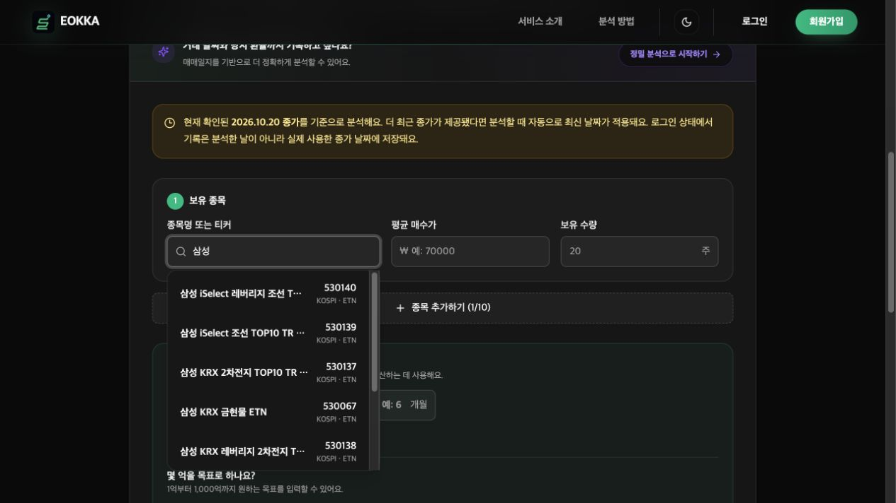
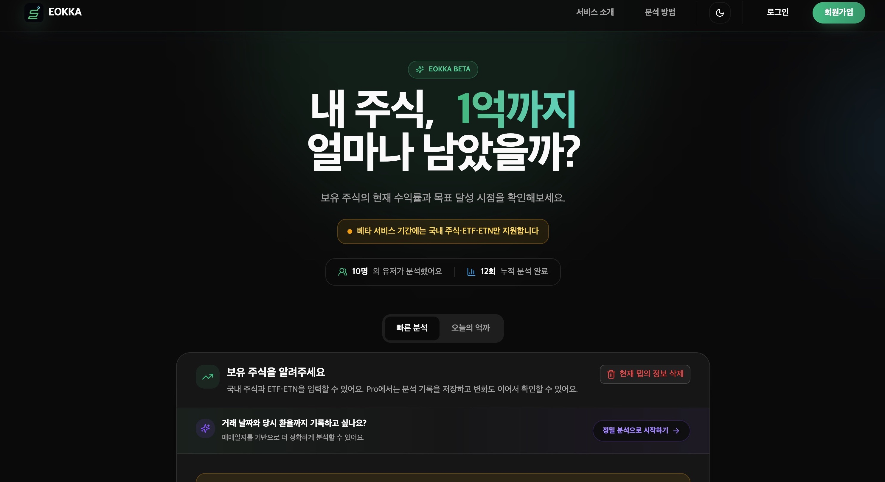
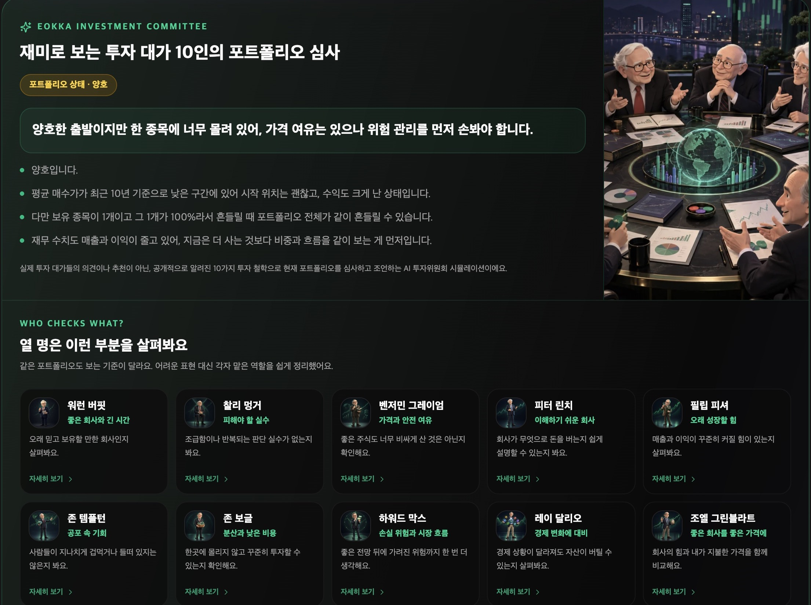
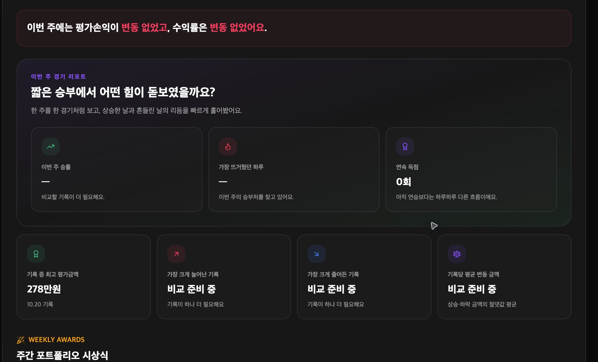
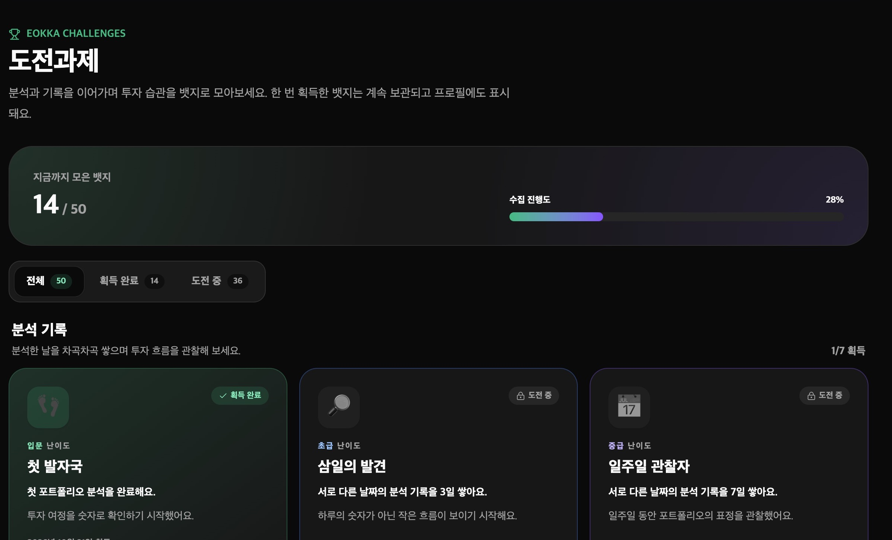
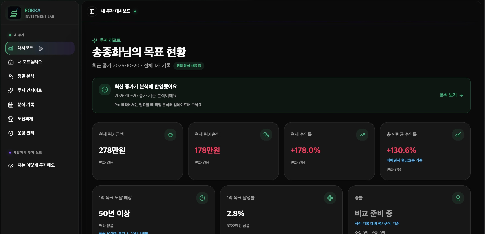
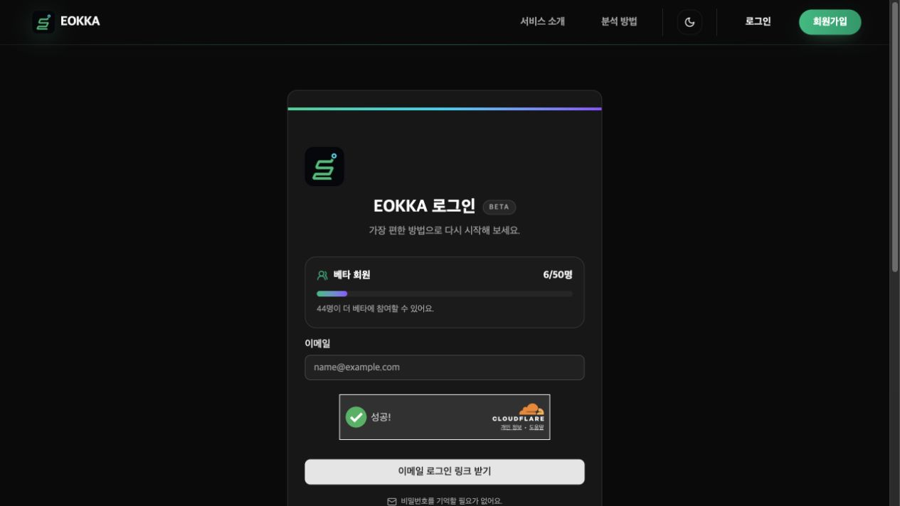
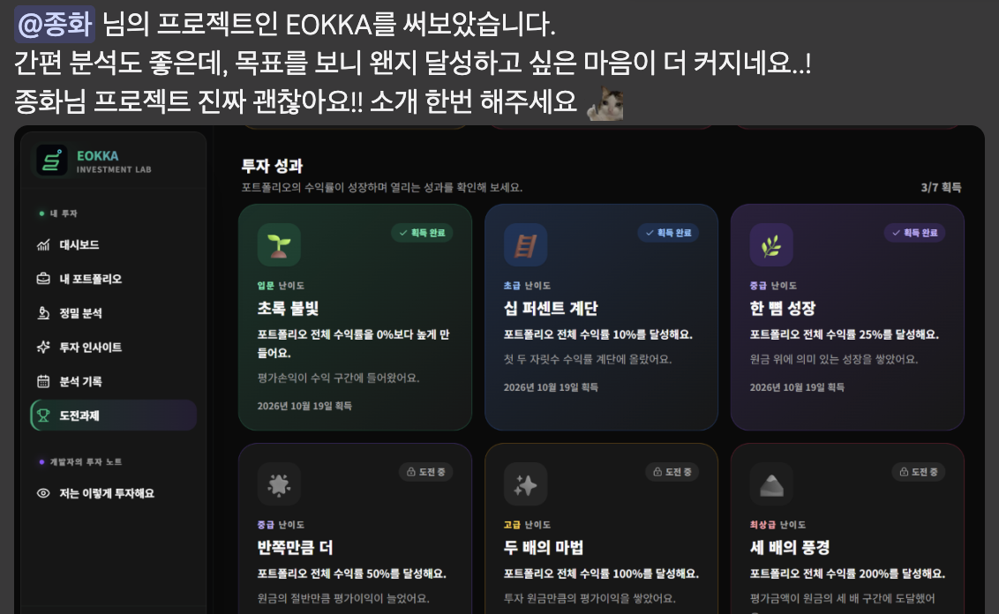

빠른 분석
종목과 평균 매수가·수량만 입력하면 현재 수익률과 목표 도달 시나리오를 빠르게 확인합니다. 로그인 없이 시작할 수 있고, 종목명·티커 자동완성으로 입력 부담을 줄였습니다.

대표 프로젝트 · 개인 풀스택 개발
“이대로 계속 투자하면, 언제쯤 얼마가 될까?”
과거 투자 데이터를 여러 시나리오로 풀어내어,
막연한 미래를 조금 더 구체적으로 바라보게 돕는 서비스입니다.



직접 주식 투자를 하면서 궁금했습니다. 지금처럼 계속 투자하면, 언제쯤 얼마가 될까? 함께 주식을 하는 어머니와 동생도 앞으로의 수익을 가늠하기 어려워, 투자를 꾸준히 이어가는 것이 맞는지 불확실해했습니다.
발견한 문제는 단순히 계산기가 없다는 것이 아니었습니다. 현재의 투자와 장기 목표 사이를 연결해서 보기 어렵다는 점이었습니다. 과거 데이터를 바탕으로 앞으로 가능한 흐름을 시나리오로 살펴볼 수 있다면, 막연한 불안 대신 미래의 윤곽을 그릴 수 있겠다고 생각했습니다.
그래서 보유 주식과 목표 금액을 입력하면 현재 상태와 여러 성장 시나리오를 함께 보여주는 EOKKA를 만들었습니다. 하나의 결과를 확정적으로 예측하기보다, 가정에 따라 달라지는 경로를 비교하고 자신의 투자 방향을 돌아보도록 구성했습니다.
종목과 평균 매수가·수량만 입력하면 현재 수익률과 목표 도달 시나리오를 빠르게 확인합니다. 로그인 없이 시작할 수 있고, 종목명·티커 자동완성으로 입력 부담을 줄였습니다.

분석한 기록을 자산·손익 추이로 연결해 투자 흐름을 한눈에 보여줍니다. 개별 분석 결과를 넘어, 시간에 따라 무엇이 달라졌는지 돌아볼 수 있게 했습니다.
분석 기록에서 얻은 기간별 성과와 투자 패턴을 카드와 친근한 설명으로 풀어냈습니다. 숫자를 나열하기보다 주간·월간·연간 흐름을 재미있게 읽고 이해하도록 구성했습니다.

분석 기록과 투자 목표를 작은 성취로 연결합니다. 당장의 수익률뿐 아니라 기록을 쌓는 과정에서도 목표의식과 꾸준히 참여할 동기를 얻도록 만들었습니다.

문제. 페이지 이동마다 화면 전체가 로딩되고, 분석을 저장한 후에는 일부 화면에 이전 값이 남았습니다.
판단과 구현. 고정 레이아웃을 유지하고 데이터 영역에만 실제 화면과 크기가 같은 스켈레톤을 표시했습니다. 라우트별 조회 결과는 메모리에 캐시하고, 분석 변경 시에는 관련 화면을 함께 무효화했습니다. 수동 업데이트 안내도 변경 감지 후 자동 재검증으로 바꿨습니다.
서버 loader 데이터로 렌더링하고 클라이언트 캐시에 등록
clientLoader가 유효한 캐시를 재사용
관련 캐시 무효화 후 서버 데이터로 재검증
결과. 정적인 UI를 반복해서 가리지 않고, 화면 간 데이터 갱신 규칙을 통일했습니다. 스켈레톤은 대기 경험을, 캐시는 반복 요청을 개선하는 역할로 구분했습니다.
브라우저 메모리의 Map에 라우트 키·버전·저장 시각을 보관하고 clientLoader가 stale 표시와 선택적 유효기간을 확인합니다. 최초 loader 결과는 usePrimeRouteDataCache로 등록합니다. 세션 스토리지에는 데이터 전체가 아닌 버전을 저장합니다.
invalidateAnalysisRouteData()가 대시보드·기록·인사이트·도전과제·프로필 등 분석에서 파생된 캐시를 함께 무효화합니다. 서버 시세는 별도로 stock_prices에 보관해 과거 이력을 재사용합니다.
캐시 무효화는 단위 테스트로 확인했습니다. 동일 조건의 전후 시간·요청 수는 아직 측정하지 않았으므로 개선율을 제시하지 않습니다.
로딩·캐시 설계 문서 ↗문제. 대시보드에 기간 집계·계산·차트·화면 상태가 모여 작은 변경에도 큰 파일을 읽어야 했습니다. 계산을 테스트할 때 화면이나 서버 모듈까지 가져오는 결합도 있었습니다.
판단과 구현. 날짜·수익률 집계는 순수 함수로, 차트·요약·인사이트는 기능별 컴포넌트로 분리했습니다. 라우트는 데이터와 화면 조립을 맡고, 사용자 행동에 밀접한 상태는 해당 컴포넌트에 남겼습니다.
결과. 대시보드 진입 파일은 4,076줄 → 990줄이 되었고, 계산을 UI·외부 API 없이 검증할 수 있게 했습니다. 줄 수는 책임 분리의 결과이며 전체 코드 감소나 성능 개선율을 뜻하지 않습니다.
분리한 모듈과 회귀 검증 기록 ↗문제. 배포 후 사용자 테스트에서 분석 요청이 500으로 실패했습니다. 서버 로그를 따라가니 외부 공공데이터 API가 400을 반환하고 있었습니다. API 키를 교체해도 증상이 반복됐습니다. 이 과정에서 오류·성능 모니터링을 위해 도입한 도구인 Sentry의 추적 설정을 확인했습니다.
원인 확인. 같은 키와 요청 조건에서 헤더만 바꿔 비교하니 추적 헤더 없음 → 200 / Sentry 추적 헤더 있음 → 400으로 갈렸습니다. 원인은 외부 API가 거부하는 sentry-trace·baggage 헤더였습니다.
수정과 검증. 서버의 tracePropagationTargets를 빈 배열로 설정해 외부 추적 헤더 전파를 끄고 오류 수집은 유지했습니다. 재배포 후 운영 서비스의 ETF 분석이 200으로 성공하는 것까지 확인했습니다.
종목 자동완성은 입력 후 250ms 디바운스로 요청을 줄이고, 검색어가 바뀌면 AbortController로 이전 요청을 취소합니다. 요청 ID도 비교해 뒤늦게 도착한 응답이 최신 목록을 덮지 않게 했습니다.
방향키로 결과를 탐색하고 Enter로 선택하며 Escape로 닫을 수 있습니다. combobox·listbox·aria-activedescendant로 입력창과 활성 결과의 관계를 표현했습니다. 키보드 동작을 구현한 범위이며 스크린리더 검증 완료를 의미하지 않습니다.
알림을 읽으면 목록과 읽지 않은 개수를 먼저 갱신한 뒤 useFetcher로 서버에 저장합니다. 서버가 실패 응답을 반환하면 읽음 상태와 개수를 되돌리고 오류를 안내하도록 구성했습니다. 화면의 즉시 반응과 서버 저장 결과를 함께 고려했습니다.
1년 미만 수익률을 무리하게 연환산하던 문제를 발견해 365일 이상일 때만 연평균 수익률을 제공하도록 바꿨습니다. 누적 수익률과 ‘1년 기록 필요’를 구분하고, 비교할 기록이 없을 때는 ‘비교 준비 중’으로 안내했습니다.
무료 사용자가 빠른 분석 후 Pro 체험을 시작해도 같은 분석을 다시 해야 대시보드를 볼 수 있었습니다. 최근 분석 한 건을 임시 보관하고 체험 시작 시 첫 정식 기록으로 자동 전환하며 관련 캐시를 갱신해 중복 입력을 줄였습니다.

학습한 loader/action 구조를 바탕으로 조회와 변경을 라우트 단위로 관리했습니다. SSR, 폼 제출, 이동 상태를 같은 체계에서 다룰 수 있어 개인 개발에 적합했습니다.
주식·거래·현금흐름·분석 결과의 형태를 타입으로 정의했습니다. 기능을 확장하거나 AI가 수정한 코드를 검토할 때 데이터 경계를 확인하는 기준으로 사용했습니다.
1인 개발에서 인증 구축 부담을 줄이고, 사용자·거래·분석 기록의 관계를 PostgreSQL로 관리했습니다. RLS로 사용자별 데이터 접근 범위를 제한했습니다.
TypeScript에서 스키마를 정의하고 마이그레이션을 남겨 개발·운영 DB의 변경을 추적했습니다. DB 구조와 애플리케이션 타입의 연결을 유지하기 위해 선택했습니다.
조회·변경은 React Router의 loader/action과 useFetcher, 입력·모달은 useState, 재방문 데이터는 공통 캐시에 맡겼습니다. 현재 공유 범위에서는 별도 Redux·Zustand 스토어를 추가하지 않았습니다.
알림 수는 브라우저 이벤트로 동기화하고 캐시 변경은 useSyncExternalStore로 구독합니다. 전역 공유를 없앤 것이 아니라 작은 범위를 직접 관리한 선택이며, 실시간·다중 화면 연동이 커지면 중앙 스토어를 다시 검토할 수 있습니다.
투자 입력·분석·대시보드·인사이트·도전과제의 사용자 흐름을 설계하고, 사용 중 발견한 불편과 운영 오류를 개선했습니다. 초기 프로젝트 구성에는 React Router·Supabase 기반의 풀스택 웹 개발 템플릿인 Supaplate를 활용했습니다.
문제 정의와 개선 우선순위는 직접 정하고 Codex를 구현과 코드 검토에 활용했습니다. 예를 들어 짧은 기간의 수익률을 연환산한 결과가 비현실적으로 커졌을 때, 수식 결과를 그대로 표시하는 대신 최소 1년 기록 기준으로 바꾸고 테스트를 추가했습니다. 구현 결과를 실제 사용 맥락에 비추어 다시 판단했습니다.
2026년 10월 12일 리팩터링 당시 단위 테스트를 33개에서 47개로 확장하고 타입 검사·클라이언트/서버 빌드·Chromium 공개 페이지 및 비로그인 접근 제어 시나리오 11개를 통과했습니다.
인증 사용자 전체 흐름·실제 결제 승인·유료 AI 요청은 해당 자동 검증에 포함하지 않았습니다.
인증·보안·외부 연동의 구현 근거는 필요한 항목을 펼쳐 확인할 수 있습니다.
로그인 링크의 인증 토큰과 세션은 Supabase Auth에 맡기되, 서비스에 맞춘 발신 도메인·메일 디자인·인증 유형별 발송을 직접 관리하기 위해 Send Email Hook → Edge Function → Resend 구조로 확장했습니다.
Edge Function에서 Hook 요청의 서명을 검증한 뒤 토큰 해시로 확인 링크를 만들고, React Email 템플릿을 HTML로 렌더링해 Resend로 발송합니다. 인증 링크가 추적 과정에서 변형되지 않도록 메일의 클릭·열람 추적도 비활성화했습니다. Supabase의 인증 기능을 대체하기보다 발송 책임을 분리한 선택입니다.

이메일 로그인·회원가입·매직 링크 요청에 Cloudflare Turnstile을 연결하는 코드를 구현했습니다. 사이트 키가 설정된 환경에서 CAPTCHA 응답을 폼의 captchaToken으로 받고, 서버 action에서 토큰 누락을 확인한 뒤 Supabase Auth에 전달하는 구조입니다. 인증 시도 후에는 위젯을 초기화하고 만료된 토큰을 갱신하도록 구성했습니다.
CAPTCHA에만 의존하지 않고 인증 메일 요청을 IP 기준 분당 5회로 제한했습니다. 운영에서는 IP 원문 대신 해시와 시간 구간별 카운터를 DB에 저장해 서버리스 인스턴스가 달라도 제한을 공유합니다. 초과 시 429와 Retry-After를 반환하며, DB 장애 시에는 현재 인스턴스의 메모리 제한으로 보완합니다.
Supabase의 RLS로 사용자별 데이터 접근을 제한하고, 서버 loader/action에서도 로그인·데이터 소유자·관리자 권한을 확인했습니다. 관리자 권한은 사용자가 수정할 수 있는 프로필 정보가 아니라 별도 관리자 테이블의 사용자 UUID로 판단합니다. DB 비밀키와 외부 API 키는 서버 전용 코드에서 다룹니다.
주식 분석 입력은 Zod로 검증하고 요청 크기와 종목 수·가격·수량 범위를 제한했습니다. 운영 응답에는 내부 오류를 그대로 노출하지 않고 일반화한 메시지를 제공합니다. CSP에는 요청마다 생성한 nonce를 사용하고 허용 스크립트 출처를 명시했으며, HSTS·nosniff·프레임 삽입 차단 정책도 적용했습니다.
구독 해지 등 주요 변경 요청에는 동일 출처 검증을 적용하고, 구현한 결제 빌링키는 AES-256-GCM으로 암호화했습니다. 브라우저·서버·DB에서 각각 책임을 나누어 한 단계의 UI 검사만으로 권한이나 입력을 신뢰하지 않도록 했습니다.
배포 후 사용자가 어떤 기능을 이용하고 어디에서 흐름이 끊기는지 확인할 수 있도록 Google Tag Manager와 Google Analytics를 설정했습니다. 페이지 이동과 가입·로그인·빠른 분석 완료·정밀 분석 완료 등의 이벤트를 dataLayer에 전달해 GA4 리포트에서 살펴볼 기반을 마련했습니다.
이벤트 이름은 TypeScript에서 공통 관리하고, 페이지 조회에는 쿼리 문자열을 제외해 인증 관련 정보 등이 측정 데이터에 섞이지 않도록 했습니다.
브라우저와 서버에 Sentry를 연결하고 환경·릴리스 정보로 배포별 오류를 구분했습니다. 오류 발생 시 세션 리플레이를 수집하되 텍스트를 마스킹하고 미디어를 차단했으며, 요청 데이터·쿠키와 URL 쿼리를 제거하도록 설정했습니다. 실제 배포 후 분석 오류도 외부 요청 로그와 대조하며 추적했습니다.
처음에는 한국투자증권 API로 국내·미국 주식을 분석하려 했습니다. 그러나 개인용 시세를 제3자에게 제공하는 제약 때문에 해당 모드를 공개 서비스에서 그대로 사용할 수 없었습니다. 운영은 금융위원회 주식·증권상품 시세 API를 사용하도록 전환하고, KIS 모드는 로컬 테스트 용도로 남겨 프로덕션 실행을 차단했습니다.
이에 맞춰 베타 서비스의 지원 범위를 국내 주식·ETF·ETN과 확정 종가 기반 분석으로 명확히 안내했습니다. 원하는 기능을 모두 노출하기보다 실제 제공 가능한 데이터 범위에 맞춰 제품을 조정했습니다.
유료 서비스의 전체 흐름을 경험하기 위해 Toss Payments 기반 카드 등록·정기결제·구독 상태·결제 내역을 구현하고 테스트했습니다. 빌링키 암호화, 결제 결과와 권한의 트랜잭션 처리, 중복 처리 방지 등 결제 이후의 데이터 일관성도 다뤘습니다.
다만 투자 관련 서비스의 결제 도입 제약과 사업자·결제 심사 준비 조건 때문에 실제 유료 운영에는 연결하지 않았습니다. 현재는 PAYMENTS_ENABLED=false로 결제 진입을 막고 무료 베타 체험으로 제공하며, 향후 조건을 갖췄을 때 검토할 수 있도록 구현을 보존했습니다. 테스트 환경의 확인과 운영 실결제 승인은 구분했습니다.
서비스를 완성하고 가족과 지인에게 소개해 실제로 사용해 보도록 했습니다. 주식 투자를 하는 지인은 도전과제를 달성하고 싶어 투자를 더 꾸준히 이어가고 싶은 의욕이 생겼다고 했고, 빠른 분석이 편리하다는 반응도 받았습니다.

가족들도 시나리오를 통해 앞으로의 자산 흐름을 간접적으로 살펴보며, 장기 투자를 이어갈 용기를 얻었다고 했습니다. 처음 해결하고 싶었던 불확실함에 대해 작은 답을 줄 수 있었습니다.
이 피드백은 수익 개선이나 장기 행동 변화가 검증됐다는 의미는 아닙니다. 다만 복잡한 데이터를 이해 가능한 경험으로 바꾸는 일이 사용자의 마음과 행동 의지에 영향을 줄 수 있다는 점을 배웠습니다.